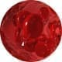

Variquit cream venas sanas - facilidad de movimiento
- Alivia el dolor y la pesadez en las piernas
- Combate la inflamación y la hinchazón
-
 Hace que la red vascular sea menos pronunciada
Hace que la red vascular sea menos pronunciada
-  Mejora la circulación de la sangre y protege contra las venas varicosas


VARIQUIT: ligereza, belleza y salud para tus piernas
La rigidez, el dolor y la hinchazón nocturnos de las piernas son los primeros signos de las venas varicosas. Con el tiempo, aparecen arañas vasculares y nudos y bultos característicos en las piernas. No sólo las mujeres, sino también los hombres se enfrentan a este problema.
VARIQUIT es una crema de base natural que combate todos los signos de las venas varicosas y mejora la salud de las venas desde el primer día de uso.
El producto hidrata y nutre la piel, alivia rápidamente el dolor y la fatiga de las piernas, reduce la hinchazón, refuerza las paredes de los vasos sanguíneos, mejora la circulación de la sangre y previene la formación de coágulos.
Con un solo curso, VARIQUIT devolverá las venas enfermas a un estado saludable, lo que antes sólo era posible con métodos quirúrgicos.
Leer más
VARIQUIT: SÓLO 5 PASOS PARA TENER UNAS VENAS SANAS
-
Paso 1
Reduce la inflamación
Detiene la producción de prostaglandinas, sustancias que provocan las inflamaciones en las venas varicosas.
-
Paso 2
Alivio del dolor
La crema restablece el flujo sanguíneo y, por tanto, alivia los síntomas más desagradables de las varices: calambres y espasmos.
-
Paso 3
Fortalecimiento

Los componentes activos de la crema refuerzan las paredes de las venas. Esto aumenta su tono general y evita que las venas finas se adhieran a la piel, se obstruyan y se formen trombos.
-
Paso 4
Relajación
Al acelerar la circulación sanguínea, las sustancias de la crema tienen un efecto antiinflamatorio y de drenaje linfático. Esto alivia la fatiga y el síndrome de "piernas pesadas".
-
Paso 5
Cuidados
Nutre e hidrata la piel. Contiene un agente enmascarador que hace menos visible la red vascular. Acelera la desaparición de hematomas, úlceras y chichones. Da a tus piernas un aspecto sano y cuidado.
las venas estarán bien en un mes
-

Centella asiática
Refuerza las paredes y válvulas de los vasos sanguíneos, reduce la viscosidad de la sangre y el riesgo de formación de coágulos
-
Ginkgo Biloba
Bloquea las inflamaciones, restablece la circulación sanguínea y mejora la elasticidad vascular
-
Mentol
Alivia la fatiga, la hinchazón y la sensación de piernas "pesadas"
-
Ruscus
Mejora el flujo sanguíneo, haciendo menos visibles los capilares y las arañas vasculares
-
Melilotus
Alivia los calambres y el dolor. Actúa como un fuerte antioxidante y purifica la sangre
-
Complejo Linfaven®
Tiene un potente efecto antivaricoso y curativo. Acelera la penetración de los componentes activos hasta la zona enferma. Al disolver los hematomas, bultos y úlceras, devuelve a las venas su aspecto saludable.
Ellos ya han valorado el efecto de VARIQUIT:
-
Melina, 48 años
El año pasado me di cuenta de que tenía varices. Las venas de mis piernas estaban hinchadas, la red vascular se había puesto morada y mis piernas estaban más hinchadas de lo normal. Inmediatamente me di cuenta de lo que ocurría y fui al médico. Me recomendó Variquit. Por supuesto, me sorprendió que la crema sólo estuviera disponible en Internet, pero el médico me aseguró que las molestias merecían la pena y que era el mejor producto.
Utilicé esta crema dos veces al día y luego me quedé en la cama con las piernas elevadas durante un rato, esperando a que se absorbiera. La crema es agradablemente refrescante y alivia rápidamente la pesadez y la hinchazón. La fragancia es muy agradable. Utilicé la crema durante 2 meses y al final del curso no había ni rastro de varices. ¡Así que se la recomiendo a todo el mundo!
-
Eduardo, 35 años
Por alguna razón, solía pensar que la enfermedad venosa era una enfermedad de mujeres. Pero luego tuve que enfrentarme a ello yo mismo. Cuando me empezaron a doler las piernas fui directamente a un osteópata, pero resultó que mis articulaciones estaban bien. Y cuando las venas se abultaron, mi mujer dijo inmediatamente que eran varices. Y tenía razón. En cuanto empecé a utilizar su crema (VARIQUIT) los síntomas desaparecieron. No sólo ayuda a las mujeres, sino también a los hombres. Mi valoración es 5/5.
-
Gabriela, 42 años
Siento mucho haber descubierto esta crema tan tarde, después de haber vivido con un dolor incesante durante 8 años. Trabajando como gerente de una cadena hotelera durante 12-16 horas al día, no solía ni siquiera sentarse en el día. Al principio me gustaba este estilo de vida: me impedía engordar, pero el paso de los años se hizo sentir. Me empezaron a doler los pies y empecé a tomar analgésicos. Más tarde, aparecieron de la nada bultos azules en mis piernas. Todo ello iba acompañado de un dolor infernal, que sólo podía aliviarse con una inyección de diclofenaco por vía intramuscular. Así fue como viví y sufrí. Los médicos se limitaron a encogerse de hombros y ofrecieron operarlas. ¡Gracias a Dios no lo hice y descubrí a Variquit! No puedo decir que me haya curado las venas de inmediato, pero me curé completamente en tres meses. Fue un milagro de Dios.
¿CÓMO PEDIR VARIQUIT?
-
RELLENA EL FORMULARIO EN ESTE SITIO WEB
Introduce tus datos de contacto
-
ESPERAR LA LLAMADA DEL ADMINISTRADOR
Verifica los datos para la entrega
-
RECIBE TU PEDIDO
Paga de la forma más conveniente en la oficina de correos
Variquit Experto en el tratamiento de la enfermedad venosa